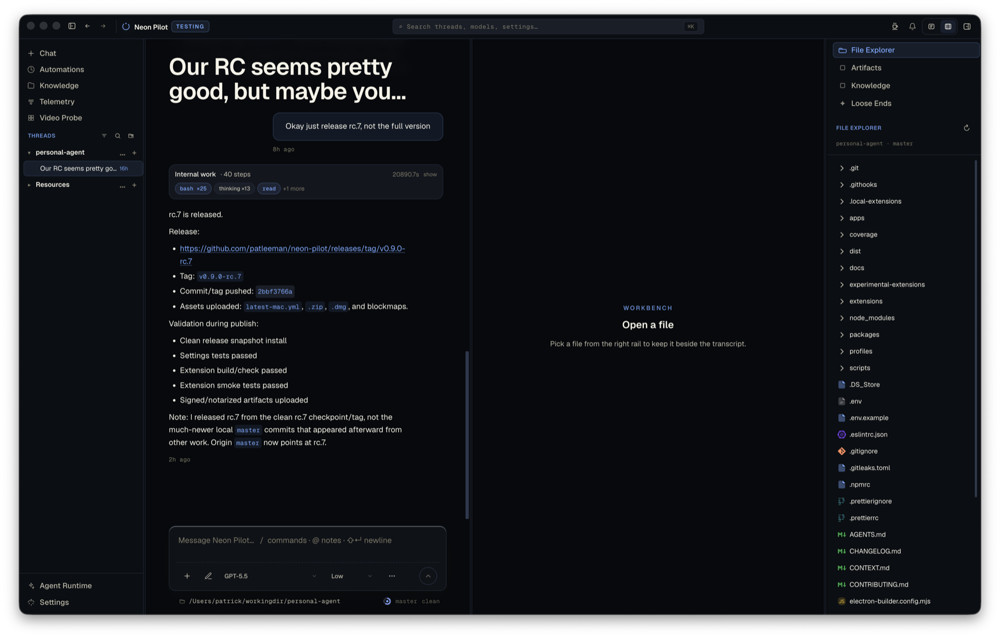
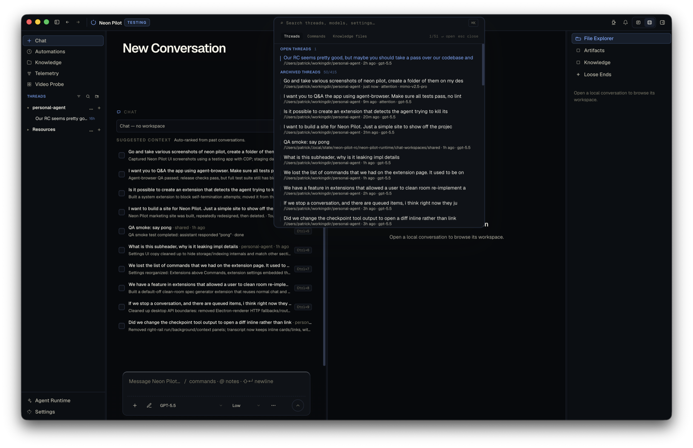
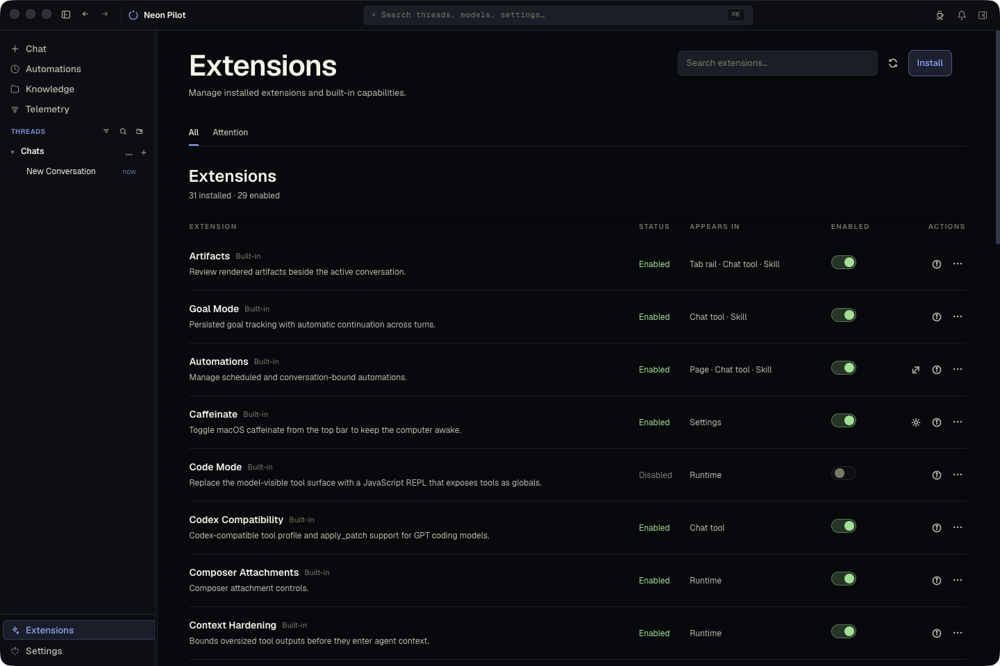
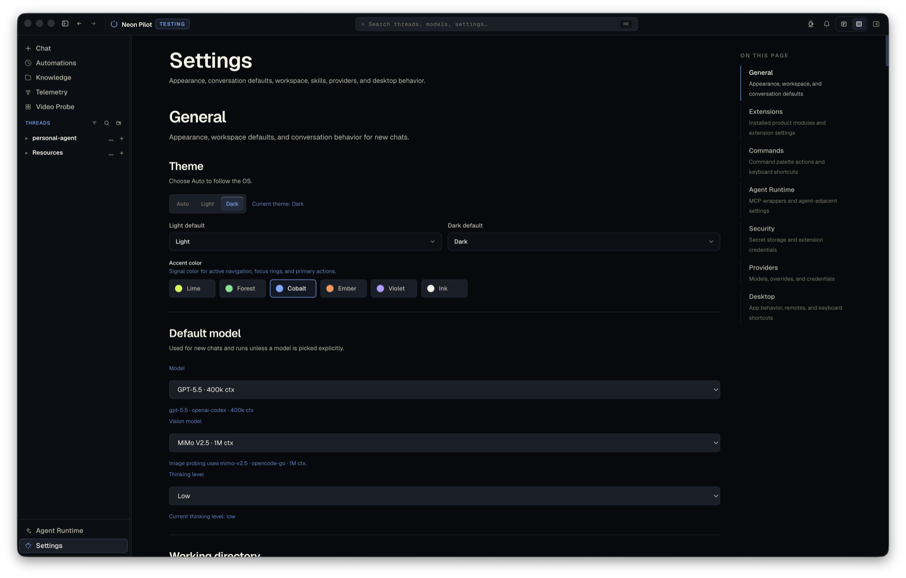

Self-extensible
Ask for a feature. Neon Pilot builds it.
 Neon Pilot
Download
Neon Pilot
Download
Neon Pilot is a self-extensible coding agent. Just tell it what you want it to do, and it can add the feature.
Powered by Pi. Built for developers. Designed to grow with you.
Ask for a feature. Neon Pilot builds it.
Secure, composable, and open.
Use the best model for the task. No lock-in.
Local model ready

Neon Pilot extends itself. Ask for new commands, tools, or workflows and it builds, tests, and integrates them — no manual setup.
Learn more →Pi is an open model context protocol for agents. Neon Pilot is built on Pi for security, composability, and long-term flexibility.
Learn more →Bring your own keys. Switch between providers anytime. Get the right model for every task without lock-in.
Learn more →


Self-extension lifecycle
Neon Pilot is not a bog-standard coding agent bolted into a chat box. Your workflow changes all the time. Your agent harness should change with it.
Extensions are the product surface
Neon Pilot can add commands, tools, workflows, knowledge surfaces, composer controls, and runtime behaviors as modular extensions.
Multi-provider
Run a frontier model for planning, a cheaper model for routine work, a vision model for screenshots, and local models when you want control.
Neon Pilot adds the runtime pieces a serious coding agent needs: durable knowledge, automations, telemetry, artifacts, workspace context, and provider routing.
Fully open source under MIT. Available on macOS today.